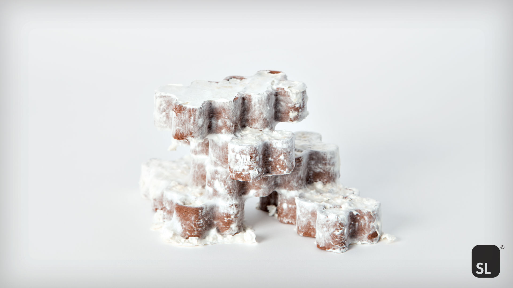

Researchers Develop New Fungi-Based 3d Printing Material
Alex Tyrer-Jones
Researchers from the Shape Lab at the Institute of Architecture and Media at Graz University of Technology have developed MyCera, a new fungi-based 3D printing material. Composed of clay, wood sawdust, and mycelium (the vegetative part of fungi), MyCera has been developed with the overall goal of reducing CO2 emissions and solving global waste management problems. This research project uses mycelium as an intelligently oriented fiber reinforcement to improve the structural performance of 3D printed unfired clay elements, and allow for bio-welding of fired elements. Because the mycelium-based material continues to grow after being 3D printed, MyCera is said to offer high-tensile strength and structural performance. The research team’s findings, entitled “MyCera. Application of mycelial growth within digitally manufactured clay structures,” have been published in the International Journal of Architectural Computing. “The overall research goal focuses on finding a viable, long-term solution to the global problem of waste management and CO2 emissions, which also affects the building industry and construction waste management,” the team explained in the research paper. “The composite ‘MyCera’ shows notable structural properties when compared to the same material mixture without mycelium. […] It is assumed that the high increase in tensile strength is caused by the growth process that takes place after printing.” The researchers added that “This kind of intelligent fiber distribution could not have been achieved with a non-growing material.”
Mycelium-based 3D printing
The Shape Lab team leveraged a Delta WASP 40100 Clay from Italy-based 3D printer manufacturer WASP in their research, successfully using the system to 3D print with MyCera. According to the researchers, the 3D printer’s open system, scale, and ability to 3D print with any past-based material make it well-suited to the project. Graz University of Technology’s Delta WASP 40100 Clay 3D printing with MyCera. Photo via Shape Lab. Utilizing the Delta WASP 3D printer, the Shape Lab team determined that, in addition to enhancing the structural performance of the 3D printed clay, mycelium can also be used to bio-weld various components together. The researchers successfully produced a number of structures by placing 3D printed elements together in a state where the mycelium continued to grow. Mycelium fibers of still growing node elements could then form connections through the expansion of a hyphal network. As such, adjacent elements could be successfully bio-welded together. According to the researchers, this could have significant implications for the construction industry, replacing traditional concrete with the more sustainable bio-based MyCera material. The team now plans to conduct more research to further this goal. “After accomplishing sufficient research [we can affirm that] the proposed material composition could replace cement-based binders,” the researchers claim. “To verify the assumption of an advantageous structural effect of grown fiber connections, a comparison of mycelial fiber reinforcement and other fibers that are commonly used to increase tensile strength, such as basalt and glass fibers, is planned.”
3D printing with mycelium
This is not the first time mycelium has been leveraged in additive manufacturing. 3D Printing Industry recently attended AM Summit Denmark 2023, Scandinavia’s largest annual 3D printing conference. Danish AM Hub, the event organizers, outlined the I AM MSHRM project, an ongoing collaboration with Bjarke Ingels Group. This partnership has seen the design and part-construction of a donut-shaped, sustainable temporary structure. The structure’s frame is being 3D printed using plastic waste, locally sourced sugarcane, and cornstarch. The frames are then filled with mycelium to create the walls. “Instead of requiring 20 years to grow a tree, you can grow mycelium paneling in 20 days or less,” explained Catherine Huang, a Partner at Bjarke Ingels Group. “This print, which is currently made of recycled plastic, could also become a biomaterial and become fully compostable. So at the end of life, it goes back into the ground.” Elsewhere, it was announced last year that London-based design studio Blast Studio had developed their own method for 3D printing with mycelium. The company used the bio-based material to 3D print a living architectural building column. Over two meters tall, this biomass structure was designed to provide both strength and the necessary growing conditions for mycelium. According to Paola Garnousset, co-founder of Blast Studio, the key goal of this project was to create a multi-purpose structure that could be harvested for mushrooms while also serving as a functional building column. Subscribe to the 3D Printing Industry newsletter to keep up to date with the latest 3D printing news. You can also follow us on Twitter, like our Facebook page, and subscribe to the 3D Printing Industry Youtube channel to access more exclusive content.
Link to original article Go back to homepage